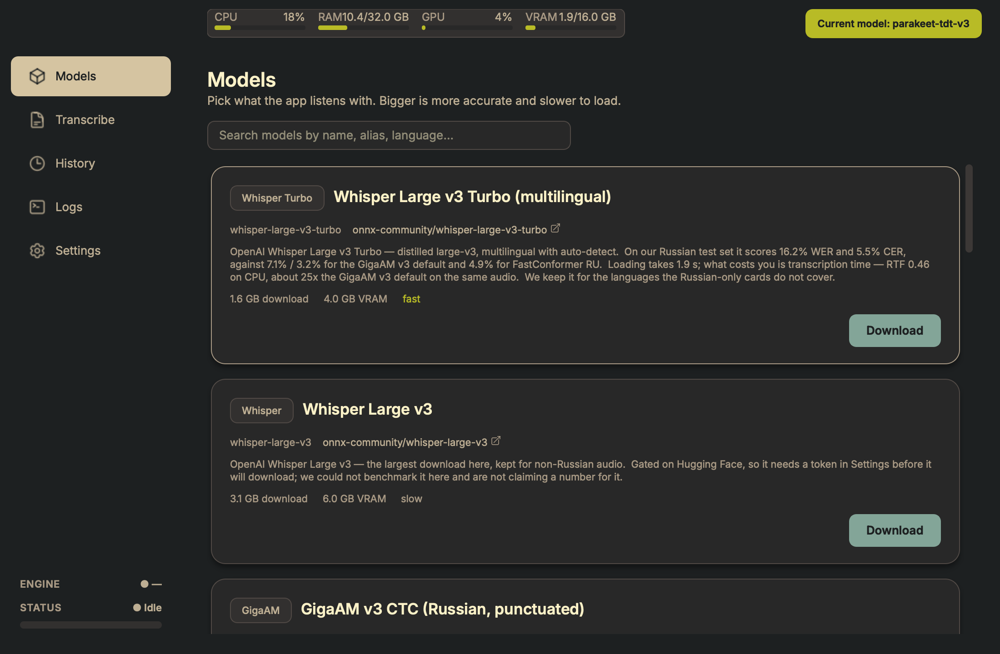
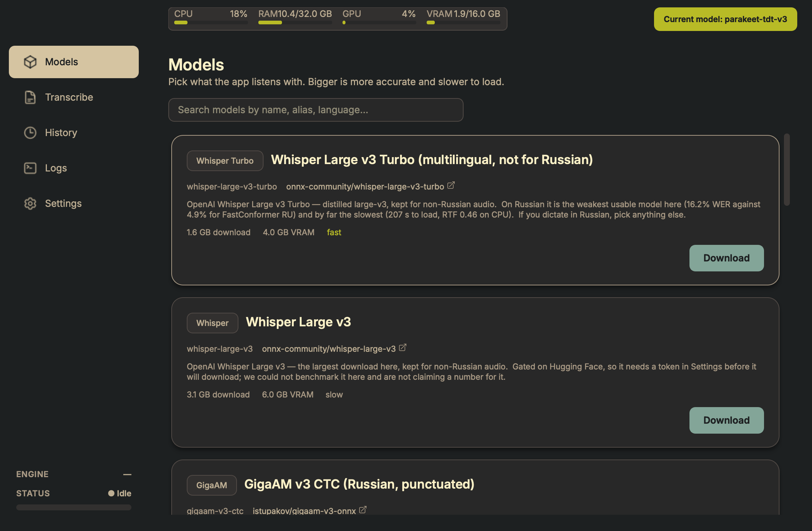
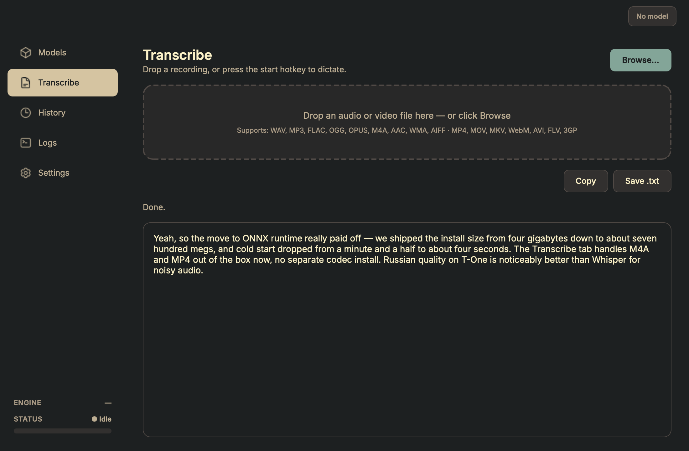
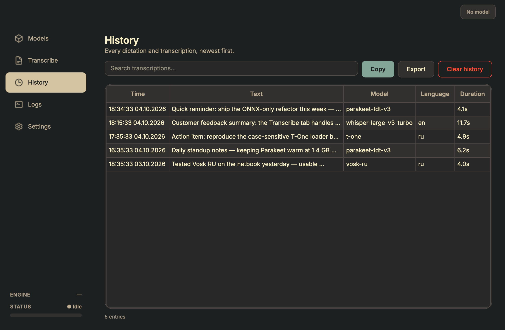
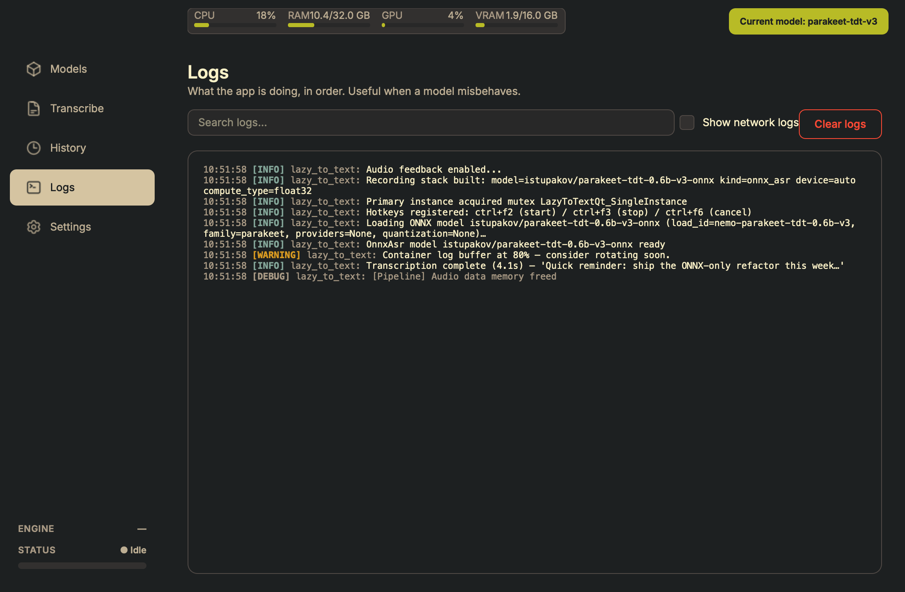
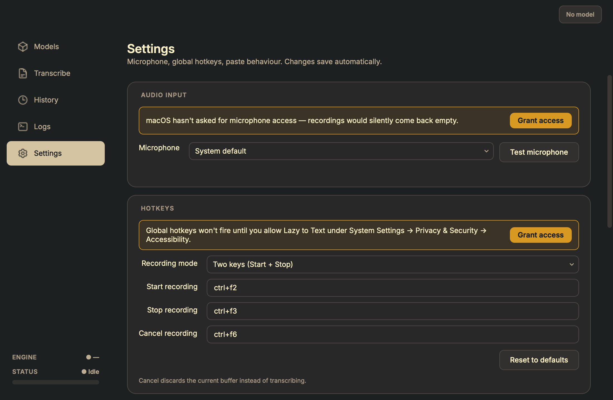

Audio stays on your machine
Recording, encoding, and inference all happen in-process. Model weights download once from Hugging Face and live in your local cache. The internet is never involved during transcription.
Lazy to Text records audio on a global keyboard shortcut, transcribes it locally through ONNX Runtime, and pastes the result into whatever window has focus. A second tab transcribes audio / video files — WAV, MP3, FLAC, OGG, M4A, MP4, MOV, MKV, WebM and friends. No cloud round-trip, no subscription, no telemetry.

Recording, encoding, and inference all happen in-process. Model weights download once from Hugging Face and live in your local cache. The internet is never involved during transcription.
After the first model download the app needs no network connection — useful for trains, planes, and locked-down enterprise laptops.
Single ONNX inference path — no PyTorch, no NeMo, no CTranslate2. The macOS bundle is 144 MB to download (150,968,699 bytes, measured). Installed it is 429 MB: the Qt modules this app never loads — 589 MB of QtWebEngineCore among them — are pruned out after the build, which took the download down by 73%.
Whisper, GigaAM v3, GigaAM multilingual, FastConformer,
Parakeet TDT v3, Canary, T-One and Vosk RU — all loaded by
the same OnnxAsrBackend. Adding a twelfth model
is a registry entry, not a new dependency tree. Every
card's numbers are measured against a held-out corpus, and
the table says which.
One shortcut records, the next stops, transcribes and pastes; a third discards. Ctrl+1…5 jump between tabs. Defaults are Ctrl+F2 / F3 / F6 on Windows and Ctrl+F8 / F9 / F10 on macOS, which reserves F1–F7 for itself. Every hotkey is remappable in Settings; edits persist on focus loss with no Save button.
Separate Transcribe tab accepts drag-drop or Browse; the
drop zone then collapses into a one-line file identity so
the transcript gets the screen.
soundfile handles WAV / FLAC / OGG / OPUS /
AIFF natively; bundled static ffmpeg covers
MP3 / M4A / AAC / WMA / MP4 / MOV / MKV / WebM / AVI /
FLV / 3GP. No system-wide ffmpeg install required. The
transcript is editable before you copy it, and the
identity line says Edited when it differs
from what the model returned.
The five most accurate models on the measured corpus are all Russian, and four of them are under 140 MB — Vosk RU small, Vosk RU, FastConformer RU and Parakeet TDT v3 land within a 0.5-point band of each other, which on 1554 words is a tie. GigaAM v3 (CTC and RNN-T) is the default because it is the only one that also restores punctuation and capitalisation, and GigaAM multilingual covers Kazakh, Kyrgyz and Uzbek alongside Russian and English.
On Windows the backend tries CUDA / TensorRT first; on Apple silicon it uses CoreML. If the accelerator is missing — or a model trips it up, as some GigaAM ops do on session creation — it silently retries on CPU and keeps running. The engine pill in the sidebar names the provider actually in use, so a silent fallback is never a silent one. Vosk, FastConformer and T-One are comfortable on CPU alone; the larger Parakeet and Canary models benefit from a GPU but don't require one.
Each Whisper card surfaces an inline panel — language, VAD filter, beam size, temperature, initial prompt — persisted per alias and pushed live into the running backend. No restart needed. Parakeet / GigaAM / T-One / Vosk panels match their narrower API surface.
Topbar widget tracks CPU / RAM / GPU utilisation / VRAM in
real time via psutil + nvidia-ml-py.
Bars colour-code green / amber / red as load climbs. The
GPU bar hides gracefully on machines without an NVIDIA
driver.
A STATUS · Idle / Recording / Processing chip
in the sidebar's bottom-left corner mirrors the topbar
cards; the VU bar under it animates while recording, so
silent or muted mics show up immediately.
Mis-clicked a 1.6 GB model? A red Cancel pill appears next to the loading indicator. One click rolls back the active card / config / topbar pill — no waiting for the download to finish.
Settings → Storage shows the resolved models folder (overridable), total disk space used by the cache (computed asynchronously), and an Open-folder shortcut to inspect or clean the cache in Explorer / Finder. Moving the folder offers to relocate the weights already in it.
Every transcription is persisted to
logs/transcription_history.json, displayed in
a filterable table with hover tooltip and detail dialog
on double-click. Export to plain text from the toolbar.
Records colour-coded by level + logger source, with a "Show network logs" toggle that hides httpx / huggingface_hub noise and a search field that filters the buffer on the fly.
The wheel is left to Qt: pixel deltas on a trackpad, the system's own momentum, no custom easing stacked on top. Item views scroll per pixel rather than per row, so a wide table glides instead of snapping. The live VU meter runs at the monitor's refresh rate (60 / 144 / 240 Hz).
Close button minimises to the system tray instead of quitting. State-aware tray icon mirrors the recording pipeline. Right-click for Show / Quit; left-click restores the window.
A named-mutex check prevents a second copy from registering the same global hotkeys. The duplicate launch shows a branded warning and exits cleanly.





Every model is an ONNX export downloaded from Hugging Face on first use. Click Download on a card to fetch weights into the configured storage folder. The table below is ordered by measured word error rate, fastest first.
How these numbers were measured. The official
Golos test split
— 400 clips, 1311.7 s of audio, 370 of them spoken, 1554
reference words. No model here was trained on it. WER is scored
against the reference for ordinary speech; clips the corpus
spells out as words but every model writes as digits
(четыре четыреста семь → 4 407) are
counted separately rather than scored as errors, because for a
dictation app digits are the output you want.
1554 words puts the 95% confidence interval at roughly
±1.0–1.8 points, so a gap under about 2 points is
a tie, not a ranking — the order below reflects the
numbers, not a verdict. Golos is voice-assistant commands
("афина, воспроизведи музыку"), not free dictation: real
voices, real rooms, real accents, but short. Treat it as the
floor of what these models handle.
| Alias | HF repo | Size | WER | RTF | Languages |
|---|---|---|---|---|---|
gigaam-v2 | istupakov/gigaam-v2-onnx | 889 MB | 3.5% | 0.015 | Russian |
vosk-ru-small | alphacep/vosk-model-small-ru | 30 MB | 4.5% | 0.006 | Russian |
gigaam-multilingual-large-ctc | istupakov/gigaam-multilingual-large-ctc-onnx | 564 MB | 4.6% | 0.028 | RU / KK / KY / UZ / EN |
vosk-ru | alphacep/vosk-model-ru | 50 MB | 4.7% | 0.007 | Russian |
fastconformer-ru | istupakov/stt_ru_fastconformer_hybrid_large_pc_onnx | 137 MB | 4.9% | 0.009 | Russian |
parakeet-tdt-v3 | istupakov/parakeet-tdt-0.6b-v3-onnx | 1.2 GB | 5.0% | 0.020 | 25 langs incl. Russian |
gigaam-multilingual-ctc | istupakov/gigaam-multilingual-ctc-onnx | 225 MB | 6.2% | 0.026 | RU / KK / KY / UZ / EN |
gigaam-v3-ctc (default) | istupakov/gigaam-v3-onnx | 260 MB | 7.1% | 0.018 | Russian |
gigaam-v3-rnnt | istupakov/gigaam-v3-onnx | 290 MB | 7.4% | 0.012 | Russian |
t-one | t-tech/T-one | 290 MB | 10.8% | 0.030 | Russian |
canary-1b-v2 | istupakov/canary-1b-v2-onnx | 2.0 GB | 11.4% | 0.059 | 25 langs incl. Russian |
whisper-large-v3-turbo | onnx-community/whisper-large-v3-turbo | 1.6 GB | 16.2% | 0.457 | multilingual |
whisper-base | istupakov/whisper-base-onnx | 107 MB | 55.6% | 0.039 | multilingual |
parakeet-ctc-0.6b | istupakov/parakeet-ctc-0.6b-onnx | 623 MB | 122.8% | 0.019 | English |
parakeet-tdt-v2 | istupakov/parakeet-tdt-0.6b-v2-onnx | 2.3 GB | 124.4% | 0.020 | English |
parakeet-rnnt-0.6b | istupakov/parakeet-rnnt-0.6b-onnx | 631 MB | 126.3% | 0.022 | English |
RTF is real-time factor: lower is faster, and anything under
1.0 runs faster than the audio it is reading. The first five
models are within noise of each other on accuracy and are
separated by a 20–700× difference in size — that is
the choice worth making. whisper-base is in the
list because it is the honest floor, useful for checking a
microphone works, not for dictation.
Ships for Windows 10 / 11 and macOS. From source you need
Python 3.12 and uv; a microphone is required either
way. A CUDA GPU is worth having on Windows for the larger
models; on Apple silicon CoreML is used automatically and the
small models need no accelerator at all.
git clone https://github.com/aa-blinov/lazy-to-text.git
cd lazy-to-text
uv sync # creates the venv from uv.lock
uv run lazy-to-text-ui # launch the app
Or build a standalone bundle — a portable folder on Windows, a
double-clickable .app on macOS:
.\scripts\build-windows.ps1 # Windows: folder bundle
./scripts/build-macos.sh # macOS: .app alias buildThe first launch leaves no model loaded — pick one from the Models tab and click Download, then press the start hotkey, speak, and press stop: the transcript pastes into the focused window. Or drop a file on the Transcribe tab to process audio / video from disk.
Hotkeys differ by platform, on purpose. Windows and Linux use Ctrl+F2 to start, Ctrl+F3 to stop and paste, and Ctrl+F6 to discard. macOS uses Ctrl+F8 / F9 / F10 instead, because the system reserves Ctrl+F1…F7 for moving focus between the menu bar, Dock, window and toolbar — a dictation app cannot have a shortcut the OS has already taken. Every hotkey is remappable in Settings.
On macOS, grant two permissions. Global hotkeys and automatic pasting need Accessibility; recording needs the Microphone. macOS never prompts on its own, so Settings shows a banner that links straight to the right pane of System Settings and, once granted, offers an in-app relaunch.
Recently landed: a rebuilt Transcribe tab whose drop zone
collapses into a one-line file identity and whose transcript is
editable, with the identity line saying Edited
when it no longer matches the model; every model card rewritten
against a measured run on the Golos test split, with the
measurement pinned by a test so a card cannot drift from it
again; a macOS .app build alongside the Windows
one, with the App menu, Accessibility and Microphone permission
banners, and hotkeys moved off the function keys macOS reserves;
a crash on first paint fixed at the root — a
KeyError escaping a Qt event filter — and two tests
that fail cleanly on it.